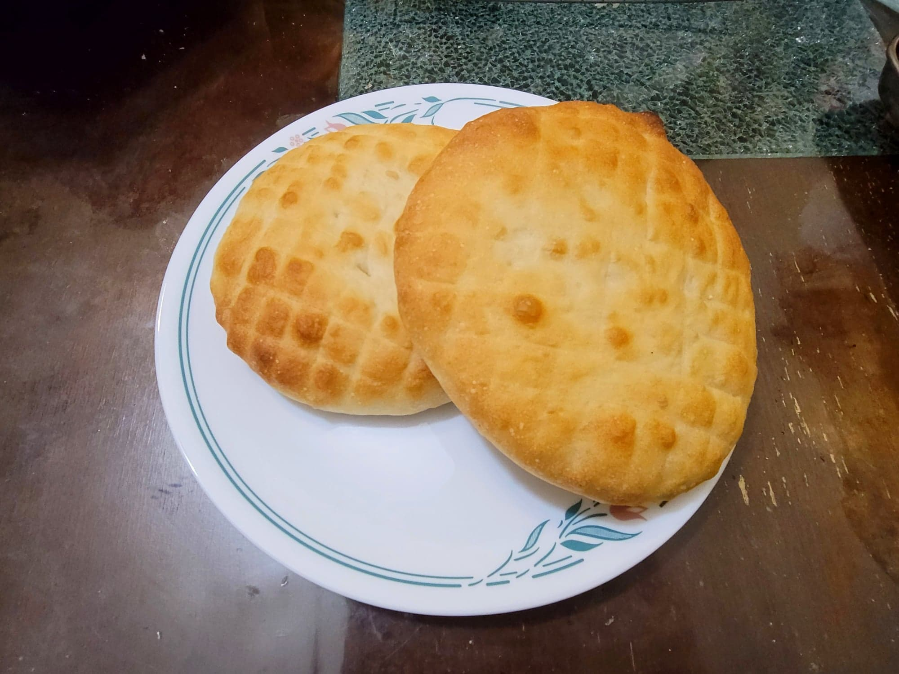

Lepinja

Ingredients:
- 2 1/4 tsp (7 g) Dry active yeast
- 3/4 cup (180 ml) Water, warm, 105-115 degrees Fahrenheit
- 4 cups (500 g) flour
- 1 tsp Sugar
- 1 tsp Salt
- 3/4 cup (180 ml) Milk, warm, 105-115 degrees Fahrenheit
- 2 tbsp Vegetable oil
Instructions:
- Combine the yeast and water and let rest for 10-15 minutes or until foamy.
- Place the flour, salt, and sugar into a large mixing bowl and whisk together. Then add in the yeast water and the rest of the ingredients. Knead together to form a dough. If too wet add flour, if too dry and water. It should be soft and barely not sticky.
- Continue to knead until the dough becomes soft and elastic. Then cover and let rise for 45-60 minutes, or until doubled.
- Once doubled, punch down the dough. Then cover and let rise again for another 45-60 minutes, or until doubled.
- Preheat an oven to 480 degrees Fahrenheit. Grease to baking sheets lightly with oil.
- Once doubled, divide the dough into 6 even pieces. Form each one into a taut ball, seam side down. Cover and let rest for 10 minutes.
- Using your hands, flatten each ball into a disk about 1/2 inch thick and roughly 6 inches wide. Place onto the baking sheets and cover. Let rest for 15 minutes.
- Right before placing into the oven, use the back of a knife or similar to create and square/diamond pattern on the tops of each lepinja. Place into the oven and bake for about 8-12 minutes, or until golden and cooked completely.
- Remove from the oven and immediately sprinkle lightly with some water. Serve immediately.